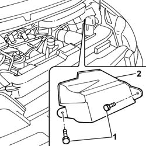
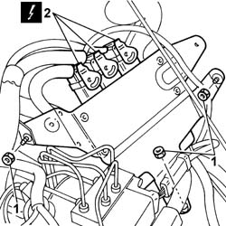
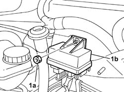
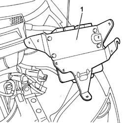

1060G80 DS ELECTRIC INJECTION CONTROL UNIT - R R
- Path
- Procedures > 10 ENGINE > 1060 DIESEL INJECTION SYSTEM > 1060G DIESEL INJECTION PRESSURE PUMP ELECTRONIC CONTROL > 1060G80 DS ELECTRIC INJECTION CONTROL UNIT - R R
- Kind
- repair procedure (removal / refitting; the operation number is the code)
- Applies to
- engines: 2.0 16V JTD, 2.2 16V JTD; all production periods
- Interactive page
- https://sloeber94.github.io/elrnDB-fUlss/en/#/179007060
Applies to: engines: 2.0 16V JTD; all production periods
 Removing
Removing
 Refitting
RefittingOp. 5010B18 CLIMATE CONTROL UNIT AIR INTAKE - R.R.
1. Undo the bolts fixing the protective cover.
2. Remove the cover.

Applies to: engines: 2.0 16V JTD; all production periods
1. Undon the control unit fixing nuts.
2. Disconnect the electrical connections for the control unit.

Applies to: engines: 2.0 16V JTD; all production periods
1. Undo the fixing nut (1a) and move the heater plugs control unit (1b) aside.

Applies to: engines: 2.0 16V JTD; all production periods
1. Release and remove the diesel electronic injection system control unit.

Applies to: engines: 2.0 16V JTD; all production periods
Refitting
Removing- Place the diesel electronic injection system control unit in position and tighten the fixing nuts.
- Connect the electrical connections for the diesel electronic injection control unit.
- Fit the heater plugs plug control unit in its seat and tighten the retaining nut.
- Fit the protective cover for the control unit and tighten the fixing bolts.
Applies to: engines: 2.2 16V JTD; all production periods
Removing
RefittingOp. 5010B18 CLIMATE CONTROL UNIT AIR INTAKE - R.R.
1. Undo the bolts fixing the sensor protective cover.
2. Remove the cover.
Applies to: engines: 2.2 16V JTD; all production periods
1. Undo the control unit fixing nuts.
2. Disconnect the electrical connections for the control unit.
Applies to: engines: 2.2 16V JTD; all production periods
1. Undo the fixing nut (1a) and move the heater plugs control unit (1b) aside.
Applies to: engines: 2.2 16V JTD; all production periods
1. Release the diesel electronic injection system control unit and remove it.
Applies to: engines: 2.2 16V JTD; all production periods
Refitting
Removing- Place the diesel electronic injection system control unit in position and tighten the fixing nuts.
- Connect the electrical connections for the diesel electronic injection control unit.
- Fit the heater plugs plug control unit in its seat and tighten the retaining nut.
- Fit the protective cover for the control unit and tighten the fixing bolts.